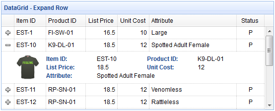

jQuery EasyUI データグリッドとツリープラグイン -Datagrid データグリッド
 jQuery EasyUI プラグイン
jQuery EasyUI プラグイン
$.fn.panel.defaults から拡張されています。$.fn.datagrid.defaults を使用してデフォルトの defaults を上書きします。
データグリッド（datagrid）は、テーブル形式でデータを表示し、データの選択、並べ替え、グループ化、編集のための豊富なサポートを提供します。データグリッド（datagrid）は、開発時間を短縮し、開発者に特定の知識を必要としないように設計されています。軽量でありながら、機能が豊富です。その機能には、セルの結合、複数列のヘッダー、列の固定、フッターなどが含まれます。

依存
- panel
- resizable
- linkbutton
- pagination
使用法
既存のテーブル要素からデータグリッド（datagrid）を作成し、HTML内で列、行、およびデータを定義します。
<table class="easyui-datagrid">
<thead>
<tr>
<th data-options="field:'code'">Code</th>
<th data-options="field:'name'">Name</th>
<th data-options="field:'price'">Price</th>
</tr>
</thead>
<tbody>
<tr>
<td>001</td><td>name1</td><td>2323</td>
</tr>
<tr>
<td>002</td><td>name2</td><td>4612</td>
</tr>
</tbody>
</table>
<table> タグを使用してデータグリッド（datagrid）を作成します。ネストされた <th> タグがテーブルの列を定義します。
<table class="easyui-datagrid" style="width:400px;height:250px"
data-options="url:'datagrid_data.json',fitColumns:true,singleSelect:true">
<thead>
<tr>
<th data-options="field:'code',width:100">Code</th>
<th data-options="field:'name',width:100">Name</th>
<th data-options="field:'price',width:100,align:'right'">Price</th>
</tr>
</thead>
</table>
JavaScript を使用してデータグリッド（datagrid）を作成することもできます。
<table id="dg"></table>
$('#dg').datagrid({
url:'datagrid_data.json',
columns:[[
{field:'code',title:'Code',width:100},
{field:'name',title:'Name',width:100},
{field:'price',title:'Price',width:100,align:'right'}
]]
});
いくつかのパラメータを使用してデータをクエリします。
$('#dg').datagrid('load', {
name: 'easyui',
address: 'ho'
});
サーバー上のデータを変更した後、フロントエンドのデータを更新します。
$('#dg').datagrid('reload'); // reload the current page data
データグリッド（DataGrid）プロパティ
このプロパティはパネル（panel）から拡張されています。以下はデータグリッド（datagrid）に追加されたプロパティです。
| 名前 | 型 | 説明 | デフォルト値 |
|---|---|---|---|
| columns | array | データグリッド（datagrid）の列（column）の設定オブジェクト。詳細については、列（column）プロパティを参照してください。 | undefined |
| frozenColumns | array | 列（column）プロパティと同じですが、これらの列は左側に固定されます。 | undefined |
| fitColumns | boolean | true に設定すると、列のサイズが自動的に拡大または縮小され、グリッドの幅に合わせて水平スクロールを防ぎます。 | false |
| resizeHandle | string | 列をリサイズする位置。使用可能な値：'left'、'right'、'both'。'right' に設定すると、ユーザーは列ヘッダーの右端をドラッグして列を調整できます。 このプロパティはバージョン 1.3.2 から使用できます。 |
right |
| autoRowHeight | boolean | 行のコンテンツに基づいて行の高さを設定するかどうかを定義します。false に設定すると、読み込みパフォーマンスが向上します。 | true |
| toolbar | array,selector | データグリッド（datagrid）パネルのヘッダーツールバー。可能な値： 1、配列。各ツールオプションはリンクボタン（linkbutton）と同じです。 2、セレクタ。ツールバーのみ。 <div> タグ内でツールバーを定義します：
$('#dg').datagrid({
toolbar: '#tb'
});
<div id="tb">
<a href="../index.html" class="easyui-linkbutton" data-options="iconCls:'icon-edit',plain:true"></a>
<a href="../index.html" class="easyui-linkbutton" data-options="iconCls:'icon-help',plain:true"></a>
</div>
配列を使用してツールバーを定義します：
$('#dg').datagrid({
toolbar: [{
iconCls: 'icon-edit',
handler: function(){alert('edit')}
},'-',{
iconCls: 'icon-help',
handler: function(){alert('help')}
}]
});
|
null |
| striped | boolean | true に設定すると、行にストライプを付けます。（つまり、奇数行と偶数行で異なる背景色を使用します） | false |
| method | string | リモートデータをリクエストするメソッド（method）タイプ。 | post |
| nowrap | boolean | true に設定すると、データが1行に表示されます。true に設定すると、読み込みパフォーマンスが向上します。 | true |
| idField | string | どのフィールドが識別フィールドかを示します。 | null |
| url | string | リモートサイトからデータをリクエストする URL。 | null |
| data | array,object | 読み込むデータ。このプロパティはバージョン 1.3.2 から使用できます。 コード例：
$('#dg').datagrid({
data: [
{f1:'value11', f2:'value12'},
{f1:'value21', f2:'value22'}
]
});
|
null |
| loadMsg | string | リモートサイトからデータを読み込むときに表示されるプロンプトメッセージ。 | Processing, please wait … |
| pagination | boolean | true に設定すると、データグリッド（datagrid）の下部にページングツールバーが表示されます。 | false |
| rownumbers | boolean | true に設定すると、行番号を持つ列が表示されます。 | false |
| singleSelect | boolean | true に設定すると、1行のみ選択できます。 | false |
| checkOnSelect | boolean | true に設定すると、ユーザーが行をクリックしたときにチェックボックスがオン/オフになります。false に設定すると、ユーザーがチェックボックスをクリックした場合にのみチェックボックスがオン/オフになります。 このプロパティはバージョン 1.3 から使用できます。 |
true |
| selectOnCheck | boolean | true に設定すると、チェックボックスをクリックするとその行が選択されます。false に設定すると、行を選択してもチェックボックスは選択されません。 このプロパティはバージョン 1.3 から使用できます。 |
true |
| pagePosition | string | ページングバーの位置を定義します。使用可能な値：'top'、'bottom'、'both'。 このプロパティはバージョン 1.3 から使用できます。 |
bottom |
| pageNumber | number | pagination プロパティが設定されている場合、初期ページ番号。 | 1 |
| pageSize | number | pagination プロパティが設定されている場合、初期ページサイズ。 | 10 |
| pageList | array | pagination プロパティが設定されている場合、ページサイズの選択リスト。 | [10,20,30,40,50] |
| queryParams | object | リモートデータをリクエストするときに送信される追加パラメータ。 コード例：
$('#dg').datagrid({
queryParams: {
name: 'easyui',
subject: 'datagrid'
}
});
|
{} |
| sortName | string | 並べ替え可能な列を定義します。 | null |
| sortOrder | string | 列の並べ替え順序を定義します。'asc' または 'desc' のみ使用できます。 | asc |
| multiSort | boolean | 複数列の並べ替えを有効にするかどうかを定義します。このプロパティはバージョン 1.3.4 から使用できます。 | false |
| remoteSort | boolean | サーバーからデータを並べ替えるかどうかを定義します。 | true |
| showHeader | boolean | 行のヘッダーを表示するかどうかを定義します。 | true |
| showFooter | boolean | 行のフッターを表示するかどうかを定義します。 | false |
| scrollbarSize | number | スクロールバーの幅（スクロールバーが垂直の場合）、またはスクロールバーの高さ（スクロールバーが水平の場合）。 | 18 |
| rowStyler | function | 'background:red' などのスタイルを返します。この関数には2つのパラメータが必要です： rowIndex：行のインデックス。0 から始まります。 rowData：その行に対応するレコード。 コード例：
$('#dg').datagrid({
rowStyler: function(index,row){
if (row.listprice>80){
return 'background-color:#6293BB;color:#fff;'; // return inline style
// the function can return predefined css class and inline style
// return {class:'r1', style:{'color:#fff'}};
}
}
});
|
|
| loader | function | リモートサーバーからデータを読み込む方法を定義します。false を返すとアクションがキャンセルされます。この関数には次のパラメータがあります： param：リモートサーバーに渡すパラメータオブジェクト。 success(data)：データの取得が成功したときに呼び出されるコールバック関数。 error()：データの取得が失敗したときに呼び出されるコールバック関数。 |
json loader |
| loadFilter | function | 表示するフィルタリングされたデータを返します。この関数には、元のデータを表すパラメータ 'data' があります。元のデータを標準のデータ形式に変換できます。この関数は、'total' と 'rows' プロパティを含む標準のデータオブジェクトを返す必要があります。 コード例：
// removing 'd' object from asp.net web service json output
$('#dg').datagrid({
loadFilter: function(data){
if (data.d){
return data.d;
} else {
return data;
}
}
});
|
|
| editors | object | 行を編集するときのエディタを定義します。 | predefined editors |
| view | object | データグリッド（datagrid）のビューを定義します。 | default view |
列（Column）プロパティ
データグリッド（DataGrid）の列（Column）は配列オブジェクトであり、その各要素も配列です。要素配列の要素は設定オブジェクトであり、各列のフィールドを定義します。
コード例：
columns:[[
{field:'itemid',title:'Item ID',rowspan:2,width:80,sortable:true},
{field:'productid',title:'Product ID',rowspan:2,width:80,sortable:true},
{title:'Item Details',colspan:4}
],[
{field:'listprice',title:'List Price',width:80,align:'right',sortable:true},
{field:'unitcost',title:'Unit Cost',width:80,align:'right',sortable:true},
{field:'attr1',title:'Attribute',width:100},
{field:'status',title:'Status',width:60}
]]
| 名前 | 型 | 説明 | デフォルト値 |
|---|---|---|---|
| title | string | 列のタイトルテキスト。 | undefined |
| field | string | 列のフィールド名。 | undefined |
| width | number | 列の幅。未定義の場合、幅は自動的に拡張されて内容に合わせられます。幅を定義しないとパフォーマンスが低下します。 | undefined |
| rowspan | number | セルが占有する行数を示します。 | undefined |
| colspan | number | セルが占有する列数を示します。 | undefined |
| align | string | 列のデータをどのように配置するかを示します。'left'、'right'、'center' を使用できます。 | undefined |
| halign | string | 列のヘッダーをどのように配置するかを示します。可能な値：'left'、'right'、'center'。値が割り当てられていない場合、ヘッダーの配置は 'align' プロパティで定義されたデータの配置と一致します。このプロパティはバージョン 1.3.2 から使用できます。 | undefined |
| sortable | boolean | true に設定すると、その列の並べ替えが許可されます。 | undefined |
| order | string | デフォルトの並べ替え順序。'asc' または 'desc' のみ使用できます。このプロパティはバージョン 1.3.2 から使用できます。 | undefined |
| resizable | boolean | true に設定すると、その列のサイズを調整できます。 | undefined |
| fixed | boolean | true に設定すると、'fitColumns' が true に設定されている場合に幅の調整を防ぎます。 | undefined |
| hidden | boolean | true に設定すると、その列が非表示になります。 | undefined |
| checkbox | boolean | true に設定すると、チェックボックスが表示されます。チェックボックスには固定幅があります。 | undefined |
| formatter | function | セルのフォーマット関数。3つのパラメータが必要です： value：フィールドの値。 rowData：行のレコードデータ。 rowIndex：行のインデックス。 コード例：
$('#dg').datagrid({
columns:[[
{field:'userId',title:'User', width:80,
formatter: function(value,row,index){
if (row.user){
return row.user.name;
} else {
return value;
}
}
}
]]
});
|
undefined |
| styler | function | セルのスタイル関数。'background:red' などのスタイル文字列を返して、そのセルのスタイルをカスタマイズします。この関数には3つのパラメータが必要です： value：フィールドの値。 rowData：行のレコードデータ。 rowIndex：行のインデックス。 コード例：
$('#dg').datagrid({
columns:[[
{field:'listprice',title:'List Price', width:80, align:'right',
styler: function(value,row,index){
if (value < 20){
return 'background-color:#FFEE00;color:red;';
// the function can return predefined css class and inline style
// return {class:'c1',style:'color:red'}
}
}
}
]]
});
|
undefined |
| sorter | function | ローカルソート用のカスタムフィールドのソート関数。2つのパラメータが必要です： a：1つ目のフィールド値。 b：2つ目のフィールド値。 コード例：
$('#dg').datagrid({
remoteSort: false,
columns: [[
{field:'date',title:'Date',width:80,sortable:true,align:'center',
sorter:function(a,b){
a = a.split('/');
b = b.split('/');
if (a[2] == b[2]){
if (a[0] == b[0]){
return (a[1]>b[1]?1:-1);
} else {
return (a[0]>b[0]?1:-1);
}
} else {
return (a[2]>b[2]?1:-1);
}
}
}
]]
});
|
undefined |
| editor | string,object | 編集タイプを指定します。文字列（string）の場合は編集タイプを指し、オブジェクト（object）の場合は次の2つのプロパティを含みます： type：文字列、編集タイプ。可能なタイプ：text、textarea、checkbox、numberbox、validatebox、datebox、combobox、combotree。 options：オブジェクト、編集タイプに対応するエディタオプション。 |
undefined |
エディタ（Editor）
$.fn.datagrid.defaults.editors を使用してデフォルトの defaults を上書きします。
各エディタには次の動作があります：
| 名前 | パラメータ | 説明 |
|---|---|---|
| init | container, options | エディタを初期化し、ターゲットオブジェクトを返します。 |
| destroy | target | 必要に応じてエディタを破棄します。 |
| getValue | target | エディタのテキストから値を取得します。 |
| setValue | target , value | エディタに値を設定します。 |
| resize | target , width | 必要に応じてエディタのサイズを調整します。 |
例えば、テキストエディタ（text editor）は次のように定義されます：
$.extend($.fn.datagrid.defaults.editors, {
text: {
init: function(container, options){
var input = $('<input type="text" class="datagrid-editable-input">').appendTo(container);
return input;
},
destroy: function(target){
$(target).remove();
},
getValue: function(target){
return $(target).val();
},
setValue: function(target, value){
$(target).val(value);
},
resize: function(target, width){
$(target)._outerWidth(width);
}
}
});
データグリッドビュー（DataGrid View）
$.fn.datagrid.defaults.view を使用してデフォルトの defaults を上書きします。
ビュー（view）は、データグリッド（datagrid）に行をどのように描画するかを指示するオブジェクトです。このオブジェクトは次の関数を定義する必要があります：
| 名前 | パラメータ | 説明 |
|---|---|---|
| render | target, container, frozen | データがロードされたときに呼び出されます。 target：DOMオブジェクト、データグリッド（datagrid）オブジェクト。 container：行のコンテナ。 frozen：凍結コンテナを描画するかどうかを示します。 |
| renderFooter | target, container, frozen | これはフッター行を描画するためのオプション関数です。 |
| renderRow | target, fields, frozen, rowIndex, rowData | これは render 関数によって呼び出されるオプション関数です。 |
| refreshRow | target, rowIndex | 指定された行を更新する方法を定義します。 |
| onBeforeRender | target, rows | ビューが描画される前にトリガーされます。 |
| onAfterRender | target | ビューが描画された後にトリガーされます。 |
イベント
このイベントはパネル（panel）から拡張されています。以下はデータグリッド（datagrid）用に追加されたイベントです。
| 名前 | パラメータ | 説明 |
|---|---|---|
| onLoadSuccess | data | データのロードが成功したときにトリガーされます。 |
| onLoadError | none | リモートデータのロード中に何らかのエラーが発生したときにトリガーされます。 |
| onBeforeLoad | param | データをロードするリクエストを送信する前にトリガーされます。false を返すとロードアクションはキャンセルされます。 |
| onClickRow | rowIndex, rowData | ユーザーが行をクリックしたときにトリガーされます。パラメータは次のとおりです： rowIndex：クリックされた行のインデックス。0 から始まります rowData：クリックされた行に対応するレコード |
| onDblClickRow | rowIndex, rowData | ユーザーが行をダブルクリックしたときにトリガーされます。パラメータは次のとおりです： rowIndex：ダブルクリックされた行のインデックス。0 から始まります rowData：ダブルクリックされた行に対応するレコード |
| onClickCell | rowIndex, field, value | ユーザーがセルをクリックしたときにトリガーされます。 |
| onDblClickCell | rowIndex, field, value | ユーザーがセルをダブルクリックしたときにトリガーされます。 コード例：
// when double click a cell, begin editing and make the editor get focus
$('#dg').datagrid({
onDblClickCell: function(index,field,value){
$(this).datagrid('beginEdit', index);
var ed = $(this).datagrid('getEditor', {index:index,field:field});
$(ed.target).focus();
}
});
|
| onSortColumn | sort, order | ユーザーが列をソートしたときにトリガーされます。パラメータは次のとおりです： sort：ソートされた列のフィールド名 order：ソートされた列の順序 |
| onResizeColumn | field, width | ユーザーが列のサイズを調整したときにトリガーされます。 |
| onSelect | rowIndex, rowData | ユーザーが行を選択したときにトリガーされます。パラメータは次のとおりです： rowIndex：選択された行のインデックス。0 から始まります rowData：選択された行に対応するレコード |
| onUnselect | rowIndex, rowData | ユーザーが行の選択を解除したときにトリガーされます。パラメータは次のとおりです： rowIndex：選択を解除された行のインデックス。0 から始まります rowData：選択を解除された行に対応するレコード |
| onSelectAll | rows | ユーザーがすべての行を選択したときにトリガーされます。 |
| onUnselectAll | rows | ユーザーがすべての行の選択を解除したときにトリガーされます。 |
| onCheck | rowIndex,rowData | ユーザーが1行をチェックしたときにトリガーされます。パラメータは次のとおりです： rowIndex：チェックされた行のインデックス。0 から始まります rowData：チェックされた行に対応するレコード このイベントはバージョン 1.3 から使用できます。 |
| onUncheck | rowIndex,rowData | ユーザーが1行のチェックを外したときにトリガーされます。パラメータは次のとおりです： rowIndex：チェックを外された行のインデックス。0 から始まります rowData：チェックを外された行に対応するレコード このイベントはバージョン 1.3 から使用できます。 |
| onCheckAll | rows | ユーザーがすべての行をチェックしたときにトリガーされます。このイベントはバージョン 1.3 から使用できます。 |
| onUncheckAll | rows | ユーザーがすべての行のチェックを外したときにトリガーされます。このイベントはバージョン 1.3 から使用できます。 |
| onBeforeEdit | rowIndex, rowData | ユーザーが行の編集を開始したときにトリガーされます。パラメータは次のとおりです： rowIndex：編集された行のインデックス。0 から始まります rowData：編集された行に対応するレコード |
| onAfterEdit | rowIndex, rowData, changes | ユーザーが行の編集を完了したときにトリガーされます。パラメータは次のとおりです： rowIndex：編集された行のインデックス。0 から始まります rowData：編集された行に対応するレコード changes：変更されたフィールド/値のペア |
| onCancelEdit | rowIndex, rowData | ユーザーが行の編集をキャンセルしたときにトリガーされます。パラメータは次のとおりです： rowIndex：編集された行のインデックス。0 から始まります rowData：編集された行に対応するレコード |
| onHeaderContextMenu | e, field | データグリッド（datagrid）のヘッダーが右クリックされたときにトリガーされます。 |
| onRowContextMenu | e, rowIndex, rowData | 行が右クリックされたときにトリガーされます。 |
メソッド
| 名前 | パラメータ | 説明 |
|---|---|---|
| options | none | オプション（options）オブジェクトを返します。 |
| getPager | none | ページャー（pager）オブジェクトを返します。 |
| getPanel | none | パネル（panel）オブジェクトを返します。 |
| getColumnFields | frozen | 列のフィールドを返します。frozen が true に設定されている場合、凍結列のフィールドが返されます。 コード例：
var opts = $('#dg').datagrid('getColumnFields'); // get unfrozen columns
var opts = $('#dg').datagrid('getColumnFields', true); // get frozen columns
|
| getColumnOption | field | 指定された列のオプションを返します。 |
| resize | param | サイズとレイアウトを調整します。 |
| load | param | 最初のページの行をロードして表示します。'param' パラメータを指定すると、queryParams プロパティを置き換えます。通常、いくつかのパラメータを渡してクエリを実行することで、このメソッドはサーバーから新しいデータをロードするために呼び出されます。
$('#dg').datagrid('load',{
code: '01',
name: 'name01'
});
|
| reload | param | 行を再ロードします。load メソッドと同様ですが、現在のページを維持します。 |
| reloadFooter | footer | フッターの行を再ロードします。コード例：
// update footer row values and then refresh
var rows = $('#dg').datagrid('getFooterRows');
rows[0]['name'] = 'new name';
rows[0]['salary'] = 60000;
$('#dg').datagrid('reloadFooter');
// update footer rows with new data
$('#dg').datagrid('reloadFooter',[
{name: 'name1', salary: 60000},
{name: 'name2', salary: 65000}
]);
|
| loading | none | ローディング状態を表示します。 |
| loaded | none | ローディング状態を非表示にします。 |
| fitColumns | none | データグリッド（datagrid）の幅に合わせて、列を自動的に展開/折りたたみします。 |
| fixColumnSize | field | 列のサイズを固定します。'field' パラメータが設定されていない場合、すべての列のサイズが固定されます。 コード例：
$('#dg').datagrid('fixColumnSize', 'name'); // fix the 'name' column size
$('#dg').datagrid('fixColumnSize'); // fix all columns size
|
| fixRowHeight | index | 指定された行の高さを固定します。'index' パラメータが設定されていない場合、すべての行の高さが固定されます。 |
| freezeRow | index | 指定された行を固定します。データグリッド（datagrid）が下にスクロールするとき、これらの固定行が常に上部に表示されます。このメソッドはバージョン 1.3.2 から使用できます。 |
| autoSizeColumn | field | コンテンツに合わせて列の幅を調整します。このメソッドはバージョン 1.3 から使用できます。 |
| loadData | data | ローカルデータをロードすると、古い行は削除されます。 |
| getData | none | ロードされたデータを返します。 |
| getRows | none | 現在のページの行を返します。 |
| getFooterRows | none | フッターの行を返します。 |
| getRowIndex | row | 指定された行のインデックスを返します。row パラメータには、行レコードまたは id フィールドの値を指定できます。 |
| getChecked | none | チェックボックスで選択されたすべての行を返します。このメソッドはバージョン 1.3 から使用できます。 |
| getSelected | none | 最初に選択された行または null を返します。 |
| getSelections | none | 選択されたすべての行を返します。選択されたレコードがない場合は、空の配列を返します。 |
| clearSelections | none | すべての選択をクリアします。 |
| clearChecked | none | チェックされたすべての行をクリアします。このメソッドはバージョン 1.3.2 から使用できます。 |
| scrollTo | index | 指定された行までスクロールします。このメソッドはバージョン 1.3.3 から使用できます。 |
| highlightRow | index | 1つの行をハイライト表示します。このメソッドはバージョン 1.3.3 から使用できます。 |
| selectAll | none | 現在のページのすべての行を選択します。 |
| unselectAll | none | 現在のページのすべての行の選択を解除します。 |
| selectRow | index | 1つの行を選択します。行インデックスは 0 から始まります。 |
| selectRecord | idValue | id の値をパラメータとして渡すことで、1つの行を選択します。 |
| unselectRow | index | 1つの行の選択を解除します。 |
| checkAll | none | 現在のページのすべての行をチェックします。このメソッドはバージョン 1.3 から使用できます。 |
| uncheckAll | none | 現在のページのすべての行のチェックを外します。このメソッドはバージョン 1.3 から使用できます。 |
| checkRow | index | 1つの行をチェックします。行インデックスは 0 から始まります。このメソッドはバージョン 1.3 から使用できます。 |
| uncheckRow | index | 1つの行のチェックを外します。行インデックスは 0 から始まります。このメソッドはバージョン 1.3 から使用できます。 |
| beginEdit | index | 1つの行の編集を開始します。 |
| endEdit | index | 1つの行の編集を終了します。 |
| cancelEdit | index | 1つの行の編集をキャンセルします。 |
| getEditors | index | 指定された行のエディタを取得します。各エディタには次のプロパティがあります： actions：エディタが実行できるアクション。エディタ定義と同じです。 target：ターゲットエディタの jQuery オブジェクト。 field：フィールド名。 type: エディターのタイプ。例: 'text'、'combobox'、'datebox' など。 |
| getEditor | options | 指定されたエディターを取得する。options パラメーターには2つのプロパティが含まれる： index: 行のインデックス。 field: フィールド名。 コード例：
// get the datebox editor and change its value
var ed = $('#dg').datagrid('getEditor', {index:1,field:'birthday'});
$(ed.target).datebox('setValue', '5/4/2012');
|
| refreshRow | index | 1行をリフレッシュする。 |
| validateRow | index | 指定された行を検証し、有効な場合に true を返す。 |
| updateRow | param | 指定された行を更新する。param パラメーターには以下のプロパティが含まれる： index: 更新する行のインデックス。 row: 新しい行データ。 コード例：
$('#dg').datagrid('updateRow',{
index: 2,
row: {
name: 'new name',
note: 'new note message'
}
});
|
| appendRow | row | 新しい行を追加する。新しい行は最後の位置に追加される：
$('#dg').datagrid('appendRow',{
name: 'new name',
age: 30,
note: 'some messages'
});
|
| insertRow | param | 新しい行を挿入する。param パラメーターには以下のプロパティが含まれる： index: 挿入される行のインデックス。定義されていない場合は、その新しい行を追加する。 row: 行のデータ。 コード例：
// insert a new row at second row position
$('#dg').datagrid('insertRow',{
index: 1, // index start with 0
row: {
name: 'new name',
age: 30,
note: 'some messages'
}
});
|
| deleteRow | index | 1行を削除する。 |
| getChanges | type | 最後のコミット以降に変更された行を取得する。type パラメーターは変更された行のタイプを表す。可能な値は: inserted、deleted、updated など。type パラメーターが指定されていない場合は、変更されたすべての行を返す。 |
| acceptChanges | none | ロードされた時点、または最後に acceptChanges が呼び出された時点以降に変更されたすべてのデータをコミットする。 |
| rejectChanges | none | 作成された時点、または最後に acceptChanges が呼び出された時点以降に変更されたすべてのデータをロールバックする。 |
| mergeCells | options | いくつかのセルを1つのセルに結合する。options パラメーターには以下のプロパティが含まれる： index: 列のインデックス。 field: フィールド名。 rowspan: 結合して跨ぐ行数。 colspan: 結合して跨ぐ列数。 |
| showColumn | field | 指定された列を表示する。 |
| hideColumn | field | 指定された列を非表示にする。 |
jQuery EasyUI プラグイン その他の拡張
クリックしてノートを共有
ノートはこの記事の内容の拡張である必要があります！
記事の投稿は、ここをクリックできます
登録招待コードの取得方法
ノートを共有する前にログインが必要です！
登録招待コードの取得方法